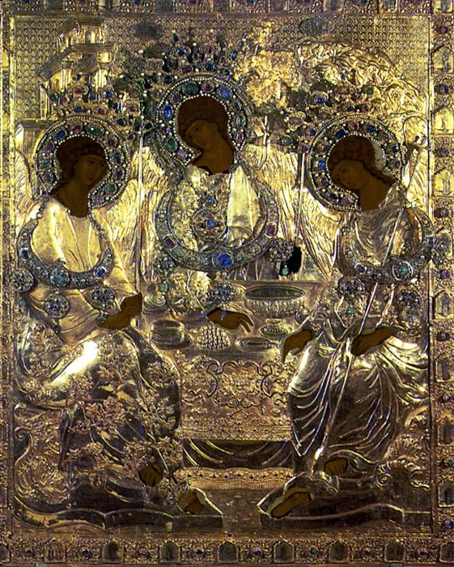

10.4. «Опиум для народа»: псевдорелигии против истинной религиозности
Том 3 · osnovy-sociologii-tom-3.pdf · стр. 133 (кандидат) · Кандидат страницы PDF; требуется сверка · источник: PDF/DOC данной редакции.
Содержит авторские утверждения; их фактическая достоверность оценивается отдельно.
10.4. «Опиум для народа»: псевдорелигии против истинной религиозности1
Как было отмечено ранее (в разделе 1.7), атеизм может существовать в двух разновидностях:
- «Атеизм материалистический» прямо заявляет: «Бога нет. Все россказни о Нём и Его бытии либо о бытии множества богов — вымыслы людей:
<!-- -->
либо не познавших Природу и взаимосвязи природных явлений и заместивших недостающее достоверное знание своими вымыслами;
либо желающих вседозволенно властвовать над невежественными обществами от имени Бога, которого реально нет, либо от имени придуманного ими сообщества богов».
<!-- -->
«Атеизм идеалистический» прямо заявляет: «Бог есть. Приходите к нам — мы научим вас истинной вере, и вы на её основе будете жить в ладу с Богом и тем самым спасёте свою вечную душу от грехов и воздаяния за них — посмертных мук».
Однако вероучения идеалистического атеизма содержат в себе столько вымыслов и клеветы, возводимой на <u>Бога, который есть</u>, что, чем более стоек в принятой им вере последователь вероучения идеалистического атеизма, — тем больше у него проблем во взаимоотношениях с Богом. Существуют и многобожные варианты идеалистического атеизма, также ведущие своих приверженцев к разладу в их взаимоотношениях с <u>Богом, который есть</u>.
Истинная религиозность отличается от идеалистического атеизма тем, что исходит из иного по его существу принципа: Бог есть. Но никто не должен притязать на то, чтобы под видом посредничества между человеком и Богом (тем более — монопольного посредничества будь оно индивидуальным либо корпоративным) препятствовать прямому диалогу людей с Богом, и поэтому каждый должен сам искать пути к установлению взаимоотношений с Богом и учиться жить с верой Ему по совести.
Сказанное предполагает, что «практика — критерий истины», и соответственно этому критерию <u>Бог, который есть</u>, даёт доказательства Своего бытия всем и каждому, о чём речь шла в разделе 5.7. Однако не все люди, некогда в прошлом в процессе взросления утратившие под влиянием порочной культуры толпо-«элитарного» общества свои личностные взаимосвязи с Богом, став взрослыми, ощущают неутолимую жажду восстановления своих осознанных взаимоотношений с Богом, который есть. И потому, даже если им даются Богом доказательства Своего бытия, то они не становятся для них рубежом, разделяющим жизнь на две части: «до» и «после», — рубежом, обязывающим их нравственно-этически после этого стараться жить в русле Промысла. Вследствие этого субкультуры разнообразного материалистического и идеалистического атеизма существуют и воспроизводятся в преемственности поколений личностной психологической деятельностью множества самонадеянных людей на протяжении многих веков и тысячелетий.
———————
В жизни обществ вероучения и религии относятся к сфере, получившей название «духовность». И в языках практически всех народов есть термины, аналогичные русским «духовная культура» и «материальная культура». Однако они многозначны и понимаются по-разному разными людьми. Сложились они на основе Я-центричного мировоззрения, в котором предельно обобщающими категориями являются: 1) пространство-вместилище, 2) время-вместилище, 3) вещество и 4) дух, оживляющий вещество и управляющий течением всех процессов во Вселенной (см. разделы 3.3 и 3.4).
Оба названных термина несут на себе печать раскола общества по способам миропонимания, поскольку:
Термин «духовная культура» подразумевает существование в Природе процессов, овеществлённый аспект которых не имеет значения для наблюдателя, представляется ему не существующим либо же действительно объективно не существует.
Термин «материальная культура», судя по его структуре, возник в тот период времени, когда атеистическая наука объявила о несуществовании духа, в силу чего слово «материя» стало синонимом слова «вещество», а также и знаком для высокопарно наукообразного обозначения всего объективно существующего2, но при этом понимание объективности таких общеприродных явлений как информация и мера (в том значении как эти термины понимаются на основе мировоззрения триединства материи-информации-меры) — было утрачено.
А информационно-алгоритмические аспекты социальных явлений, получивших названия «материальная культура» и «духовная культура», в обоих случаях обозначались словом «культура». Это касается как «памятников» культуры, принадлежащих обеим её разновидностям, так и деятельности людей в области культуры в целом3 — её развития, уничтожения, чистки, пустого формотворчества, не изменяющего содержания информации и алгоритмики исторически сложившейся культуры и т.п.
При такой смысловой нагрузке обоих терминов, термин «духовная культура» на некоторое время стал своего рода «знаменем», под сенью которого группировались те, для кого бездушие и материализм-атеизм науки, победившей в общественной жизни «клерикализм» исторически сложившихся конфессий, были неприемлемы.
Поэтому, соответственно изначальному значению слов, входящих в наименование предельно обобщающих понятийных категорий Я-центричного миропонимания, — было бы более точно говорить:
о культуре (генетически не наследуемой информации), запечатлённой в веществе — «вещественной культуре», а не о «материальной» (аналогично тому как в следственно-судебной практике принят термин «вещественные доказательства»);
и о культуре (генетически не наследуемой информации), запечатлённой в духе (в физических полях, излучение которых свойственно и восприятие которых доступно человеку) — «духовной культуре».
———————
В разделе 4.8 речь шла о порождении людьми эгрегоров (разного рода коллективных психик) и о взаимодействии индивидуальной психики людей и эгрегоров. Всякий эгрегор как материальный объект включает в себя 1) полевое образование (которое можно назвать «полевым телом» эгрегора) и 2) некоторое количество людей, связанных с эгрегором по жизни (они подпитывают этот эгрегор энергетически или информационно-алгоритмически, действуют под его водительством или выполняют иные функции в «жизни» эгрегора). При этом полевое тело эгрегора может существовать в ноосфере Земли некоторое время самостоятельно — без энергетической подпитки его живыми людьми. Период его самостоятельного существования может завершиться либо вовлечением в эгрегор новых людей (в том числе и выросших в иных культурах), либо необратимой деградацией и разложением полевого тела эгрегора в процессе преобразования материальных структур, образовывавших это полевое тело, чему может сопутствовать и утрата информационно-алгоритмического содержания этого эгрегора (если его копии не были записаны на каких-то иных носителях — в обособленной психике индивидов, в других эгрегорах и памятниках вещественной культуры).
Соответственно такому пониманию, один из аспектов общественного явления, называемого «духовная культура», — порождение и преобразование эгрегоров — коллективных духов, несущих определённую энергию, информацию, алгоритмику в не овеществлённом виде на биополевом уровне в организации Мироздания.
———————
Всё это позволяет понять, что:
- Вероучение идеалистического атеизма может:
<!-- -->
сложиться социально-стихийно, т.е. вбирая в себя плоды самодеятельного «художественного творчества» множества людей;
может быть создано целенаправленно как информационно-алгоритмический комплекс под решение определённых задач анонимного управления обществом в обход контроля сознания людей, это общество составляющих;
кроме того, в каких-то случаях определённо целесообразный умысел может опираться на самодеятельность, возбуждать самодеятельность и направлять её в желательном для себя направлении.
<!-- -->
- Если вероучение идеалистического атеизма охватывает некоторое количество людей, распространяется в обществе, то на его основе формируется соответствующий эгрегор.
Всё это говорит о том, что в культуре обществ могут наличествовать эгрегориальные религии, ничего общего не имеющие с истинной религиозностью людей, если под истинной религиозностью понимать осмысленный диалог человека с <u>Богом, который есть</u>, на основе веры Ему по жизни каждого верующего, в результате чего люди некоторым образом осознают Промысел и свою долю4 — миссию — в нём.
Выявление открытой возможности существования эгрегориальных религий, основанных на вероучениях идеалистического атеизма, приводит к вопросу: Чем жизнь обществ и людей персонально под властью эгрегориальных религий отличается от жизни обществ и людей на основе истинной религиозности?
———————
Прежде всего необходимо отметить, что по отношению к эгрегориальным религиям большинство упрёков приверженцев материалистического атеизма справедливы. Действительно:
такой Бог, каким Его представляют вероучения идеалистического атеизма, — объективно не существует;
а вероучения идеалистического атеизма — это своеобразный коктейль из вымыслов невежественных людей и целенаправленного умысла тех, кто желает вседозволенно властвовать над обществами от имени <u>Бога, который есть</u> (либо от имени множества «богов»).
Соответственно общеизвестное, хотя и не цитатно-точное, ленинское «религия — опиум для народа»5 по отношению к эгрегориальным религиям идеалистического атеизма — вполне справедливо; и вопрос Остапа Бендера отцу Фёдору «Почём опиум для народа?»6 — тоже уместен при условии: если «отец Фёдор» не в состоянии показать по жизни («практика — критерий истины»), что его религиозность — не эгрегориальная, что он живёт в диалоге с Богом и добросовестно творит свою долю в Его Промысле.
Известны также порицания идеалистического атеизма и заправил его культов носителями истинной религиозности. Заправилами культов идеалистического атеизма в обществе является знахарство. Оно же держит веками и календарно-хронологическую надгосударственную монополию: календари и хронология существуют дольше, чем многие государства. Анализируя только часть этой системы воздействия на общество средствами второго приоритета — иудейский календарь (скорее всего, что вместе с замкнутой на него талмудистикой и каббалистикой) + к тому программирование психики людей посредством астрологических «как бы прогнозов» — хорезмийский учёный Бируни7 вынес правильное суждение:
«Но это только тенета и сети, которые знахари расставили, чтобы уловить простых людей и подчинить их себе. Они добились того, что люди ничего не предпринимали несогласно с их мнением и пускались на какое-нибудь дело только по их предначертаниям, не советуясь с кем-либо другим, словно эти знахари, а не Бог — властители мира. Но Бог с ними рассчитается…» (И.А. Климишин, «Календарь и хронология», Москва, «Наука», 1985 г., с. 169: в оригинальном тексте цитаты употреблены слова: «жрецы», а не «знахари»; «Аллах», а не «Бог»).
Однако и приверженцы эгрегориальных религий, чьи вероучения основаны на идее единобожия, в своём исходном утверждении: «Бог — есть, Он — Творец и Вседержитель», — тоже правы. И вопрос только в том, какая именно умышленная ложь и неумышленная фальшь сопутствуют этому утверждению в каждом из вероучений идеалистического атеизма, извращая представления людей о Боге и Его Промысле.
О том, что Бог есть, но Он — не такой, каким Его представляют вероучения идеалистического атеизма эгрегориальных религий, — приверженцы материалистического атеизма не задумываются, поскольку нравственность и этика в их миропонимании свойственна только людям и имеет место только в системе их взаимоотношений, и никаких нравов и этики вне этой системы быть не может. Это следствие их неумения пользоваться в жизни принципом «практика — критерий истины», не знающим исключений в решении познавательно-творческих задач любого рода. По этой причине нравственно-этические по их существу доказательства Богом факта Своего бытия приверженцами материалистического атеизма в качестве доказательств не воспринимаются.
Но об этом же не задумываются и представители эгрегориальных религий, основанных на вероучениях идеалистического атеизма, сохраняя верность которым, они игнорируют либо извращённо интерпретируют прямые обращения к ним Бога — через их внутренний мир (через сокровенное), на языке жизненных обстоятельств через поток событий общей всем жизни, через других людей, чем и отвергают Бога и истинную религиозность.
Соотношение эгрегориальной и истинной религиозности хорошо иллюстрирует следующая аналогия. Икона для молитвы необязательна, но иконы существуют. Многие из них украшены окладами из золота, серебра с драгоценными каменьями. Оклад может быть очень красив и притягателен эстетически, но он скрывает и запечатывает <u>икону как таковую</u>. Пример такого запечатывания — опубликованное в 1991 г. настенным плакатом-календарём цветное изображение «Троицы» А. Рублёва (1411 г.) в окладе, подаренном Троице-Сергиевой лавре Борисом Годуновым (в 1600 г.) 8.
На следующем развороте:
Слева: репродукция иконы письма Андрея Рублёва «Троица» как она есть.
Справа: фотоколлаж9 «Троица» в упомянутом золотом окладе.

Хотя оклад повторяет абрис иконы, но живопись подавлена его золотом вследствие того, что оклад скрывает до 90 % и более поверхности иконы; а то немногое, что осталось вне его темницы, утонуло в затмевающем всё блеске окружающего золота.
Кроме того, если быть внимательным, то можно заметить: на окладе наличествует то, чего нет на оригинальном изображении — громадные наплечные ожерелья с драгоценными каменьями и прочие украшения на одежде ангелов и в их нимбах; на столе стоит несколько чаш, а не одна; соответственно оклад скрывает и то, что изображено внутри чаши на самóй иконе (как пишут искусствоведы, в чаше на иконе — голова жертвенного тельца́ — символа «новозаветного агнца», т.е. Христа, якобы предопределённого в жертву согласно церковному вероучению); кроме чаш — на столе разнообразная снедь.10
Если истинную религиозность уподобить информации, открываемой человеку иконой как таковой, то <u>икона в окладе</u> — аналог эгрегориальной религии, в которой оклад-эгрегор, представляющий собой отсебятину людей, подменяет собой истинную религию и блокирует доступ к затмеваемой им истине.
Однако, в магической субкультуре знахарства сама икона и её оклад могут стать «предметами силы»11 (осуществления власти), связанными с соответствующими эгрегорами верующих. И потому с точки зрения хозяев и заправил такой субкультуры иконы и оклады полезны, как и все прочие инструменты осуществления анонимной власти над людьми.
Но при признании возможности существования эгрегориальных религий:
Культуры и субкультуры, основанные на идеях материалистического атеизма, тоже предстают как эгрегориальные религии, хотя церемониально-обрядовая их составляющая может быть существенно менее развитой и бросающейся в глаза, нежели церемониально-обрядовая составляющая эгрегориальных религий, основанных на вероучениях идеалистического атеизма.12
Точно также и эгрегор-оклад, основанный на знахарской отсебятине вероучений материалистического или идеалистического атеизма, прежде всего прочего — духовный «предмет силы», т.е. инструмент неперсонифицированного (анонимного) управления обществами со стороны знахарской корпорации, которая норовит властвовать анонимно от имени Бога (или множества «богов», которых они придумали сами) соответственно своим целям, либо на основе идеи о том, что Бога и иных «богов» нет. Но в силу невидимости эгрегоров для очей телесных и невнимательно-бездумного отношения к Жизни13 большинства, почти все живущие под властью эгрегориальных религий, не осознают факта эгрегориальных ограничений их свободы и своей подневольности эгрегорам таких псевдорелигий, их заправилам и хозяевам.
Эгрегориальные религии существуют в пределах Божиего попущения, если под Промыслом понимать совокупность целей, путей и средств их осуществления, избранных Богом в отношении Мироздания, человечества, обществ и конкретных людей, а под попущением — пределы, в которых Бог допускает уклоняться от осуществления Промысла всем, кому Он в Своём Предопределении бытия предоставил свободу выбора.
Но если люди под властью эгрегориальных религий становятся невосприимчивы к Правде-Истине, доводимой до их сведения Богом Вседержителем через их внутренний мир (через сокровенное), а также — на языке жизненных обстоятельств, через обращения к ним других людей, под воздействием чего культуры обществ могут быть освобождены от лжи и заблуждений, то такие культуры и субкультуры, не способные освободиться от идеалистического и материалистического атеизма, обречены на крах: Бог отказывает в поддержке их приверженцам, упорствующим в своей подневольности лжи и заблуждениям, и они под гнётом порождаемых ложью и заблуждениями проблем либо одумываются, либо погибают: выбор за ними.
Эта ситуация, достигшая глобального масштаба, может быть охарактеризована словами, уточняющими начальные строки стихотворения Даниила Леонидовича Андреева «Иерархия»14:
Напрасно ждало человечество,
Что с древних кафедр и амвонов
Из уст помазанного15 знахарства
Прольётся творческий глагол16:
Все церкви мира — лишь хранители
Былых Заветов и канонов;
От их блистательных обителей
Творящий Логос отошёл…
———————
Об опасности идеалистического атеизма, хотя и не употребляя этого термина, предупреждают и некоторые тексты в писаниях, признаваемых священными в разных религиозных традициях. Так в Новом завете читаем:
«14. И Ангелу Лаодикийской церкви напиши: так говорит Аминь, свидетель верный и истинный, начало создания Божия:
15. знаю твои дела; ты ни холоден, ни горяч; о, если бы ты был холоден, или горяч!
16. Но, как ты тёпл, а не горяч и не холоден, то извергну тебя из уст Моих.
17. Ибо ты говоришь: “я богат, разбогател и ни в чём не имею нужды”; а не знаешь, что ты несчастен, и жалок, и нищ, и слеп, и наг (выделено нами жирным при цитировании).
18. Советую тебе купить у Меня золото, огнём очищенное, чтобы тебе обогатиться, и белую одежду, чтобы одеться и чтобы не видна была срамота наготы твоей, и глазною мазью помажь глаза твои, чтобы видеть.
19. Кого Я люблю, тех обличаю и наказываю. Итак будь ревностен и покайся» (Откровение (Апокалипсис), гл. 3).
Порицает идеалистический атеизм и сам Христос. В одной из бесед с книжниками и фарисеями он их упрекает:
«…таким образом вы устранили заповедь Божию преданием вашим. Лицемеры!» (Матфей, 15:6, 7).
О том же в Коране:
«Скажи: “Неужели вы станете учить Бога вашей вере, когда Бог знает то, что в небесах и что на земле? И Бог знает о всякой вещи!» (сура 49. «Комнаты», 16).
Тем не менее вероучения идеалистического атеизма и эгрегориальные религии существуют вопреки этим и другим предостережениям, и в них обрядность культа подменяет собой религию как осмысленную сокровенную этическую связь души человека и <u>Бога, который есть</u>.
Об опасности обрядоверия, способного подменить и реально подменяющего истинную религию в указанном выше смысле, Христос тоже предупреждал:
«5. И, когда молишься, не будь, как лицемеры, которые любят в синагогах и на углах улиц, останавливаясь, молиться, чтобы показаться перед людьми. Истинно говорю вам, что они уже получают награду свою.
6. Ты же, когда молишься, войди в комнату твою и, затворив дверь твою, помолись Отцу твоему, Который втайне; и Отец твой, видящий тайное, воздаст тебе явно.
7. А молясь, не говорите лишнего, как язычники, ибо они думают, что в многословии своём будут услышаны;
8. не уподобляйтесь им, ибо знает Отец ваш, в чём вы имеете нужду, прежде вашего прошения у Него» (Матфей, гл. 6)17.
Если не кривить душой, то следует признать:
Все церкви имени Христа, существуют и действуют вопреки этому предостережению.
Обрядоверие порицается также и в Сунне18: «Раб Божий получает от молитвы только то, что он понял». И соответственно, если из молитвы индивид не вынес никакого жизненного смысла, хотя честно отработал ритуальную процедуру, то это эквивалентно тому, что он и не молился вовсе.
И потому для многих таких, ложно почитающих себя истинными правоверными мусульманами, их «ислам» — всего лишь поклонение молитвенному коврику под чтение Корана, в смысл которого они и не вникают, дабы не соотносить свою жизнь с ним и не быть обременёнными нравственно-этической обязанностью человека — осознанно-осмысленно по своей воле жить в русле Промысла, творя в нём свою долю с Божией помощью19.
Характерной чертой всякой культуры, основанной на атеизме, включая культуры и субкультуры идеалистического атеизма, рассматриваемые как информационно-алгоритмические системы, является то обстоятельство, что они создают проблемы, которые люди под их властью, даже если и способны увидеть и осознать, то не способны разрешить.
В силу этого обстоятельства культуры и субкультуры, в основе которых лежит атеизм обоих видов, если их носители не желают от него освободиться, способны только к воспроизводству самих себя в неизменном виде в течение некоторого времени в пределах Божиего попущения, после чего следует их деградация вплоть до необратимого их ухода в историческое прошлое.
Это информационно-алгоритмически обусловлено тем, что:
С одной стороны, в эгрегориальных религиях материалистического и идеалистического атеизма Дух Святой — не наставник для людей на всякую истину.
А с другой стороны, все культурно обусловленные эгрегоры — продукт деятельности самих же людей, и потому в них нет иного информационно-алгоритмического содержания, кроме вложенного в них самими же людьми в ходе их личностно-психологической деятельности, в результате которой культурно обусловленные эгрегоры возникают, и их существование и функционирование поддерживается осознанно или бессознательно.
Поэтому:
Эгрегоры эгрегориальных религий как материалистического, так и идеалистического атеизма — не могут дать ответов на те вопросы, ответы на которые не заложены в них в явной или в неявной форме: они либо вообще молчат, либо дают ответы не на те вопросы, либо дают жизненно несостоятельные ответы20.
И потому слова апостола Павла, выражающие принцип «практика — критерий истины», которые уже приводились ранее, обличают жизненную несостоятельность эгрегориальных религий:
«... Бог не есть бог неустройства, но мира. Так бывает во всех церквах у святых» (Новый завет, Павел, 1‑е Коринфянам, 14:33).
Но при этой жизненной несостоятельности эгрегориальных религий на основе учений идеалистического и материалистического атеизма история эгрегориальных религий полна разного рода «чудес», которые убеждают их приверженцев в истинности их вероучений. В основе же «чудес», действительно имевших и имеющих место, лежат следующие обстоятельства:
эгрегор «знает» и «помнит» информации и алгоритмики много больше, чем доступно сознанию и подвластно воле большинства людей, — тем более живущих под его властью;
энергетически эгрегор мощнее любого индивида, живущего под его властью и отдающего ему в той или иной мере свои энергетические ресурсы;
будучи полевой структурой, всякий эгрегор связан с иными полевыми структурами Мироздания и через них — так или иначе (прямо или опосредованно) со всеми материальными объектами и субъектами.
В силу названных обстоятельств, эгрегориальная алгоритмика способна вызывать разнородные «чудеса», локализованные как в обществе, так и в окружающей природе. Поэтому никакая «мистика» не является доказательством истинности вероучения:
История любой из традиций вероисповедания — при всём множестве их разногласий друг с другом по вопросам богословского и социологического характера — содержит обширный перечень «чудес», совершённых их святыми или свершившихся по молитвам их верующих. Все эти «чудеса» являются доказательствами истинности любого вероучения для его приверженцев, но редко кого из приверженцев иных вероучений эти же чудеса убеждают отказаться от их веры и войти в какую-то иную «истинную веру».
И соответственно этому в Новом завете читаем:
«22. Многие скажут Мне в тот день: Господи! Господи! не от Твоего ли имени мы пророчествовали? и не Твоим ли именем бесов изгоняли? и не Твоим ли именем многие чудеса творили?
23. И тогда объявлю им: Я никогда не знал вас; отойдите от Меня, делающие беззаконие» (Матфей, гл. 7).
———————
В отличие от порождённых и поддерживаемых людьми разнородных эгрегоров Бог знает всё, и потому на основе истинной религиозности люди — индивидуально и общества — могут получить жизненно состоятельные ответы на любые вопросы, которые возникают у них по жизни.
И это — главный критерий, который позволяет отличить истинную религиозность и свободу человека на её основе от приверженности людей разнообразным эгрегориальным религиям материалистического и идеалистического атеизма.
И на этой основе могут быть выявлены и созидательно разрешены все проблемы обществ и человечества в целом:
«Закон и пророки21 до Иоанна22; с сего времени Царствие Божие благовествуется и всякий усилием входит в него» (Лука, 16:16). «Ищите прежде Царствия Божия и Правды Его, и это всё (по контексту благоденствие земное для всех людей) приложится вам» (Матфей, 6:33). «Ибо говорю вам, если праведность ваша не превзойдёт праведности книжников и фарисеев, то вы не войдёте в Царство Божие23» (Матфей, 5:20).
Однако вопреки этим словам Христа и свидетельствам, не устранённым из канона Нового завета24, в исторически сложившемся христианстве учение о становлении на Земле Царствия Божиего усилиями самих людей в Божьем водительстве расценивается как ересь — ложное вероучение, — которое получило название «хилиазм» (по-гречески) или «милленаризм» (по латыни)25.
При этом главное чудо и знамение бытия Божиего — само Мироздание, его гармония, естественная его жизнь.
И соответственно всем приверженцам эгрегориальных религий могут быть адресованы слова, переданные Свыше через Христа:
«Что вы зовёте Меня: Господи! Господи! — и не делаете того, что Я говорю?» (Лука, 6:46).
И в связи со всем сказанным выше в разделе 10.4 повторим ранее сказанное в разделе 5.7:
«1. Любите справедливость, судьи земли, право мыслите о Господе, и в простоте сердца ищите Его, 2. ибо Он обретается не искушающими Его и является не неверующим Ему26. 3. Ибо неправые умствования отдаляют от Бога, и испытание Его силы обличит безумных. 4. В лукавую душу не войдёт премудрость и не будет обитать в теле, порабощённом греху, 5. ибо Святый Дух премудрости удалится от лукавства и уклонится от неразумных умствований, и устыдится приближающейся неправды. 6. Человеколюбивый дух — премудрость, но не оставит безнаказанным богохульствующего устами, потому что Бог есть свидетель внутренних чувств27 его и истинный зритель сердца его28, и слышатель языка его. 7. Дух Господа наполняет вселенную и, как всё объемлющий, знает всякое слово» (Библия, Синодальный перевод, Ветхий завет, Премудрость Соломона, гл. 1 — книга не включённая в канон, т.е. в стандарт писания).
Это воззрение поясняет Новый завет: Дух Святой — наставник на всякую истину (Иоанн, 14:26, 16:13). Из Корана можно понять то же самое («Если вы будете благоговеть перед Богом, Он даст вам Различение и очистит вас от ваших злых деяний и простит вам» — 8:29), что в терминологии современной информатики можно выразить так: способность к выделению из фона в темпе развития ситуации сигнала, несущего новую информацию, — даётся человеку непосредственно Богом, и это обусловлено нравственностью человека и его верой Богу.
И ещё раз повторим слова царя Давида:
«Сказал безумец в сердце своём: “Нет Бога”» (Библия, Псалтирь, 13:1).
Принцип «практика — критерий истины» не знает исключений, но надо научиться практически пользоваться этим принципом в Жизни.
В дополнение к излагаемому в разделах 10.4 и 10.5 см. также работы ВП СССР «К Богодержавию…», «Почему, призывая к Богодержавию, Внутренний Предиктор не приемлет Последний завет», «“Мастер и Маргарита”: гимн демонизму? либо Евангелие беззаветной веры».↩
Это предельно ярко выразилось в ленинском определении: «материя есть философская категория для обозначения объективной реальности…», — данном им в работе «Материализм и эмпириокритицизм».↩
В принятом в Концепции общественной безопасности значении этого слова как совокупности всей информации и алгоритмики, не передаваемой от поколения к поколению в готовом к употреблению виде на основе генетики биологического вида, о культуре которого идёт речь.↩
Из этого контекста в Русском языке и возникает значение слова «доля» отчасти синонимичное значению слова «судьба».↩
Точное — «религия есть опиум народа», восходит к аналогичным оценкам религии К. Марксом. В 1905 г. Ленин высказывался ещё более жёстко в том смысле, что религия — даже не «опиум», а «род духовной сивухи, в которой рабы капитала топят свой человеческий образ…» (В.И. Ленин, ПСС, изд. 5, т. 12, с. 143). Это — более жёсткая оценка, нежели уподобление религии опиуму, поскольку в те годы опиум употреблялся и в медицине как средство избавления пациентов от страданий при сильных до невыносимости болях (и в этом качестве он был полезен), а сивуха — всегда была и есть вредоносный дурман.↩
См. И. Ильф, Е. Петров, «Двенадцать стульев».↩
Годы жизни: 973 — 1048 гг.↩
Этот оклад заменил собой композиционно аналогичный оклад Ивана Грозного (1576 г.), который при Борисе Годунове был переложен на специально написанную для этого копию рублёвской «Троицы».↩
Фотографию, положенную в основу композиции упомянутого выше календаря 1991 г., найти не удалось, поэтому представлен коллаж из репродукции «Троицы Рублёва» (PD-art) + фото оклада. Такой видела публика «Троицу» до 1904 года: оклад плюс потемневшая олифа.
Вальтер Беньямин, посетивший Россию в 1926 г., писал о нём: «…и шеи и руки <ангелов>, когда оклад накрывает икону, оказываются словно в массивных цепях, так что ангелы несколько напоминают китайских преступников, осуждённых за свои злодеяния на пребывание в металлических колодках» (http://ru.wikipedia.org/wiki/Троица_Рублева).↩
Но есть ещё более показательный пример отсебятины авторов окладов. На изданной массовым тиражом цветной репродукции (настенном плакате-календаре 1994 г.) иконы «Казанской Божией Матери» в окладе — на окладе дважды отчётливо видно художественно неуместное клеймо фирмы Фаберже, превозносящейся в самодовольстве: один раз — на нимбе пречистой девы; один раз — в деталях её одежды.↩
Термин из книги Карлоса Кастанеды «Учение дона Хуана», в которой описывается опыт вхождения Карлоса Кастанеды в шаманские психо-физиологические практики древних индейцев и их магию.↩
Но это утверждение не относится к культам личностей: царей, диктаторов, деятелей искусств и шоу-бизнеса — в культах многих из них церемониал и обрядность может превосходить своею изысканностью и утончённой проработкой деталей обрядность любой церкви.↩
Это подразумевает, что при внимательно-осмысленном отношении к Жизни, явления и объекты, не воспринимаемые непосредственно, могут быть выявлены по их проявлениям и разного рода оставленным ими следам, т.е. опосредованно.↩
Оригинальный текст Д.Л. Андреева: Ждало бесплодно человечество, / Что с древних кафедр и амвонов / Из уст помазанного жречества / Прольётся творческий глагол. / Все церкви мира — лишь хранители / Заветов старых и канонов; / От их померкнувших обителей / Творящий логос отошёл.
В нашей версии стихотворение начинается со слова «напрасно»: оно — главное, определяющее отношение ко всему дальнейшему в тексте. У Д.Л. Андреева первые слова — «ждало бесплодно», что и содержательно неточно (плоды приносит работа, а ожидание — не работа, и потому бывает не бесплодным, а напрасным), и акцент смещён на «ожидание» с напрасности ожиданий.↩
Помазанье — один из обрядов в религиозных культах, основанных на Библии. В ходе этого обряда на лоб или иной участок головы помазываемого наносится елей либо миро — специальные составы благовоний. В большинстве случаев помазание представляет собой и символизирует приобщение помазываемого к чему-то, что прежде было для него недоступно. Помазанье включено в церемониал вступления на трон, пострижение в монашество и совершается в некоторые иных случаях. Более обстоятельно см. http://www.krotov.info/library/bible/comm/pomazanie.htm.↩
Знахарство, утратившее жреческий статус, не тем занято.↩
Далее следует текст молитвы, общеизвестной под названием «Отче наш» — по её первым словам.↩
Собрание свидетельств о поведении пророка Мухаммада в разных ситуациях, его высказываниях по разным вопросам жизни общества. Сунна признаётся мусульманами-суннитами и отвергается мусульманами-шиитами.↩
В последний раз в истории России это ярко выразилось в чеченском сепаратизме: там было всё, что угодно, и прежде всего — поползновение перейти к рабовладельческому строю, но не было Ислама как осмысленной жизни людей в диалоге с Богом, хотя сепаратисты действовали под лозунгами ислама и многие из них были ритуально безупречны.↩
В материалах КОБ это показано предметно на примере анализа вероучения секты последователей Виссариона (Сергей Анатольевич Тороп — его портретами были оклеены все города России и многие города на постсоветском пространстве в 1990‑е гг.; он утверждал, что в его лице имеет место второе пришествие Христа): см. аналитическую записку ВП СССР 1999 г. «Почему, призывая к Богодержавию, Внутренний Предиктор не приемлет Последний Завет?».
Также с этим критерием желающие могут соотнести «социальные доктрины» и житейские поучения представителей всех исторически сложившихся вероисповеданий.↩
«Закон и пророки» во времена Христа — это то, что ныне называется «Ветхий завет».↩
Иоанн Креститель, иначе — Иоанн Предтеча.↩
В каноне Нового завета вместо слов «Царство Божие» стоят слова «Царство Небесное» — цензоры и редакторы, конструируя эгрегориальную религию под свои цели и задачи, постарались…↩
Например: «После же того, как предан был Иоанн, пришёл Иисус в Галилею, проповедуя Евангелие Царствия Божия» (Марк, 1:14).↩
Оба названия происходят от слова «тысяча» по-гречески и латыни — соответственно, поскольку приверженцы этой «ереси» были убеждены в том, что Судному дню будет предшествовать тысячелетнее Царствие Божие на Земле. Это управленчески понятно:
сначала человечество выходит в устойчивый режим жизни в преемственности поколений, предопределённый для него Свыше как определённый рубеж развития;
за этим следует Судный день — анализ и объяснение предшествующей истории, т.е. подведение итогов;
после этого начинается новый этап истории человечества.
И вопреки мнению иерархов церквей имени Христа именно эта «ересь» и является сутью истинного Христианства, и потому она поддерживается Свыше и обречена на победу: «Бог написал: “Одержу победу Я и Мои посланники!” Поистине, Бог — сильный, могучий!» (Коран, сура 58. «Препирательство», 21).↩
Обратим внимание, что Соломон говорит о вере Богу, а не <u>о вере в Бога, при неверии Ему…</u>↩
В том числе и тех чувств, что ныне относятся к «экстрасенсорике».↩
Это — о сокровенном.↩